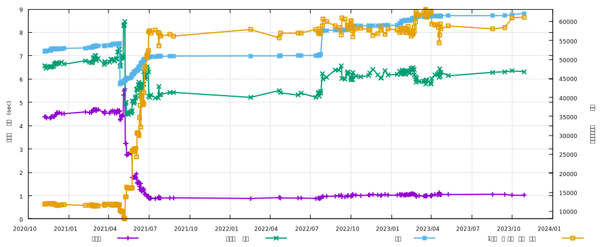

LuneScript のソースコード規模とビルド時間の推移
LuneScript のソースコード規模まとめをやったのが、3年前の 2020/10/1。
../../2020/2020-10-01-lunescript-codesize/
3年経ったのでそろそろ振り返りをやっても良い頃だろう、ということで、 今回はソースコード規模とついでにビルド時間の推移についてのネタ。
ソースコード規模とビルド時間の推移
以下は、 2020/11/8 から現在までのソースコード規模とビルド時間の推移を示す図である。

このグラフは、以下の 4 つの値の推移を表わしている。
-
セルフホストビルドの実時間
- .lns から .lua, .go へのトランスコンパイルに掛った実時間。
-
セルフホストビルドのユーザCPU時間
- .lns から .lua, .go へのトランスコンパイルに掛ったユーザCPU時間。
- トランスコンパイルによって、CPU をどれだけ使ったかを示す。
- LuneScript のビルドは並列処理をしている分、実時間よりも多くユーザ CPU 時間が掛る。
-
LuneScript の .lns のソースコードライン数
- コメント行も含むソースコードの行数
-
セルフホストビルドにおいて、1秒間に処理した行数
ソースコードライン数 / 実時間の値
図の左の Y 軸が時間を示し、図の右の Y 軸が行数を示している。
なお、ビルド時間に関しては、かなりの誤差を含んでいる。 複数回実行して平均を取っているが、実行時間が 1 秒前後でしかないので、 100msec の誤差が入っても 10% 違うことになる。
もっと規模の大きいプロジェクトで計測できれば良いのだが、 残念ながら LuneScript のプロジェクトで一番大きい規模は LuneScript 自身であり、 これ以上の大きい規模のものはないため、これは割り切るしかない。
よって、ビルド時間に関しては、だいたいの傾向を見ていく。
また、3年前のソースコード規模のグラフと比べると、 だいぶゴチャついていて分かり難いと思うが、 それぞれの値について以降で説明していく。
セルフホストビルドの実時間
まず、セルフホストビルドの実時間から見ていく。 2020/11 と現在を比べると約 1/4 に短縮できているのが分かる。
特に 2021/5 から 2021/7 にかけて短期間に短縮している。 逆に言えば、それ以降はほとんど変っていないとも言える。
2021/7 以降も改善は続けているが、思った程の効果が出ていないのが良く分かる。
LuneScript の .lns のソースコードライン数
ソースコードライン数の推移は特徴的な変化点(2021/5 辺りと 2022/8 辺り)が 2 つある。
これは何かというと、次の通り。
-
2021/5
- 実験的に作っていた C 言語へのトランスコンパイル用ソースを削除
-
2022/8
- 実験的に python へのトランスコンパイル用ソースを追加
ソースコードの削除でコード量が減り、ソースコードの追加でコード量が増えている。
それ以外は、不具合修正や機能追加などで微増している。
大規模な設計変更をしない限りは、今後も微増が続いていくだろう。
セルフホストビルドのユーザCPU時間
ユーザ時間は、ほぼ LuneScript のソースコードライン数に比例して推移している。 セルフホストは、LuneScript のソースコードを全て読み込み、 解析し、別の言語への変換を行なうので、ソースコードの行数が増えれば それを処理しているユーザCPU時間が増えるのは当然の結果と言えるだろう。
ここで注目してもらいたいのは、 ユーザCPU時間が増えても実時間はほとんど変化が無い、ということ。
それだけ頑張って並列化して、実時間に影響が出ないようにしている。
セルフホストビルドにおいて、1秒間に処理した行数
最後がセルフホストビルドにおいて、1秒間に処理した行数。
実時間だけ見ていると、 2021/7 以降ほとんど全く改善されていないように見えるが、 この値の推移を見ると分かるにように、僅かではあるが改善している。
実時間に表われ難いのは、それらが細かい改善で、 その改善のために追加したコード量と、 それによって改善された処理時間がほとんど同じになってしまっているからである。
だた、これはセルフホストビルドの結果だからであって、 他のプロジェクトであれば、普通にビルド時間が短縮されているはずだ。
そのための指標が、この値である。
この値は、単位時間でどの程度処理したか？を表わすので、 同じプロジェクトに対して、 LuneScript のバージョンを変えてビルドしたら、 どの程度処理できるか、をこのグラフから推測できる。
2020/11 から現在までで、5倍強の量を処理できるようになっている。
なお、この値はビルド対象の依存関係に大きく影響を受ける。 最悪なケースは、巨大な 1 ファイルで構成されて、かつ1つの関数が大きい場合で、 次に悪いのがモジュールの参照構造が片方向リストのように数珠繋ぎになっている場合である。
まとめ
今回はソースコード規模とビルド時間について振り返りを行なった。
ビルド時間の改善については、 2021/5 から 2021/7 にかけてかなり改善したが、 それ以降は小さな改善に留まっている。
これは、改善するためのネタが無い、というのが一番の要因である。
これ以上の改善は、根本の設計からの見直しが必要になると思われる。
ここで難しいのが、 根本の設計からの見直しをするとかなり時間がかかることが予想される、ということ。 しかも、それによって確実に改善できるならまだしも、 ほとんど変らない、むしろ悪化することも考えられる。 そうすると、どうしても慎重にならざるをえない。
そんなこんなで、速度改善に関しては厳しい状態が続いている。 まぁ、これはライフワークみたいなモノだと思って、今後も気長にやっていこうと思う。